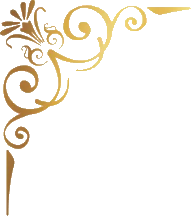
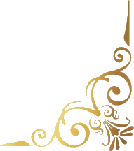

Realize seu devocional com o coração disponível!
Antes de começar, prepare seu ambiente, fique em silêncio, concentre sua atenção na Palavra e permita-se estar presente neste momento.
Oração do dia
Pai,
hoje eu quero reconhecer diante de Ti que não fui criado para caminhar sozinho. Muitas vezes tento resolver tudo por conta própria, escondo minhas dificuldades e tenho dificuldade de permitir que outras pessoas percebam quando preciso de ajuda. Ensina-me a valorizar as pessoas que colocaste ao meu lado e a receber o cuidado que elas podem oferecer. Dá-me humildade para reconhecer minhas limitações e sabedoria para construir relacionamentos em que exista confiança, cuidado e verdadeira comunhão.
Em nome de Jesus, amém.

“Melhor é serem dois do que um, porque maior é o pagamento pelo seu trabalho. Porque se caírem, um levanta o companheiro. Mas ai do que estiver só, pois, caindo, não haverá quem o levante.”
(Eclesiastes 4:9,10)
Reflexão
Contexto
Eclesiastes 4 apresenta uma reflexão sobre as injustiças, o trabalho, a ambição e a solidão presentes na vida humana. Pouco antes desses versículos, o autor observa a situação de uma pessoa que trabalha continuamente, acumula riquezas e, mesmo assim, não tem ninguém com quem compartilhar aquilo que conquistou. A partir dessa observação, ele apresenta o valor da companhia e da cooperação: “Melhor serem dois do que um.” O texto destaca que existem benefícios que simplesmente não podem ser experimentados da mesma maneira quando alguém escolhe viver isolado. O exemplo utilizado é bastante concreto: se uma pessoa cair, a outra poderá levantá-la. A ideia não é dizer que toda pessoa precisa estar constantemente acompanhada ou que toda solidão é necessariamente ruim, mas mostrar que Deus nos criou com uma necessidade real de relacionamento, cooperação e apoio mútuo.
Reflexão
Vivemos em uma época em que a independência costuma ser tratada como uma grande virtude. Desde cedo aprendemos que precisamos “nos virar”, resolver nossos próprios problemas, conquistar nosso espaço e não depender de ninguém. Existe algo saudável nisso: precisamos desenvolver responsabilidade, maturidade e capacidade de tomar decisões. O problema começa quando independência deixa de significar responsabilidade e passa a significar incapacidade de receber. Aos poucos, podemos construir uma vida em que pedir ajuda parece sinal de fraqueza, demonstrar vulnerabilidade parece perigoso e depender de alguém parece uma ameaça à nossa autonomia. Eclesiastes 4 nos confronta justamente nesse ponto ao afirmar que “melhor serem dois do que um”. O texto não está celebrando a incapacidade individual, mas reconhecendo uma realidade que muitas vezes tentamos negar: existem momentos da vida em que precisamos de alguém para caminhar conosco.
O autor não apresenta essa verdade de maneira abstrata. Ele utiliza uma imagem extremamente simples: “Se um cair, o outro levanta o seu companheiro.” Existe uma honestidade muito grande nessa afirmação porque ela pressupõe que vamos cair em algum momento. Não diz “se um tiver um dia ruim”, “se um enfrentar uma pequena dificuldade” ou “se um precisar de companhia”. Diz: “se um cair.” A vida humana possui quedas. Existem momentos em que nossas forças diminuem, decisões dão errado, portas se fecham, relacionamentos nos ferem, perdas acontecem, a fé passa por períodos difíceis e simplesmente não conseguimos continuar no mesmo ritmo. E, nesses momentos, uma das maiores bênçãos que alguém pode receber é ter uma pessoa que não apenas observa nossa queda, mas se aproxima para nos levantar.
Isso nos leva diretamente ao desafio de hoje: para ser levantado, precisamos permitir que alguém se aproxime. Parece óbvio, mas nem sempre é. Algumas pessoas caem e imediatamente se escondem. Sofrem em silêncio, desaparecem, dizem que está tudo bem e continuam tentando resolver internamente aquilo que está machucando. Talvez tenham aprendido ao longo da vida que demonstrar necessidade é perigoso. Talvez já tenham confiado em alguém e se decepcionado. Talvez tenham sido ensinadas a suportar tudo sem reclamar. Talvez tenham medo de incomodar. Ou talvez simplesmente tenham construído uma identidade baseada na ideia de que são aquelas que cuidam dos outros, mas nunca precisam ser cuidadas.
Existe uma dificuldade particular para quem está acostumado a ser forte. Quando passamos muito tempo ocupando a posição de quem ajuda, aconselha, resolve e sustenta, pode ser estranho ocupar o outro lado. Sabemos como oferecer uma mão, mas não sabemos como estender a nossa. Sabemos como perguntar “como posso ajudar?”, mas respondemos automaticamente “está tudo bem” quando alguém faz a mesma pergunta para nós. Sabemos acolher a vulnerabilidade dos outros, mas temos dificuldade de permitir que alguém veja a nossa. E, sem perceber, podemos transformar uma qualidade bonita, a disposição de servir, em uma barreira contra o recebimento.
Mas Eclesiastes nos lembra que a vida não é construída apenas por pessoas que levantam, também existem momentos em que somos aqueles que precisam ser levantados. Isso não diminui nossa maturidade. Não anula nossa força. Não significa que fracassamos. Significa simplesmente que somos humanos. Aquele que hoje está ajudando alguém pode amanhã precisar da mesma mão que ofereceu. Aquele que hoje encoraja pode amanhã precisar ser encorajado. Aquele que hoje sustenta alguém em oração pode amanhã precisar que alguém ore por ele. Existe uma beleza nisso porque Deus não criou a comunidade como uma relação unilateral, em que alguns são sempre fortes e outros sempre necessitados. Ele nos permite experimentar diferentes lados do cuidado.
Talvez uma das razões pelas quais temos tanta dificuldade de receber seja porque receber nos coloca em uma posição de vulnerabilidade. Quando ajudamos alguém, temos certo controle sobre a situação. Podemos escolher quanto oferecer, quando oferecer e como oferecer. Quando somos nós que precisamos de ajuda, o controle muda de mãos. Precisamos confiar. Precisamos permitir que alguém veja uma parte da nossa vida que talvez preferíssemos esconder. Precisamos admitir que não sabemos o que fazer ou que não conseguimos fazer sozinhos. E isso pode ser profundamente desconfortável para quem aprendeu a construir segurança através do controle.
A Bíblia não está ensinando que devemos colocar toda a nossa vida nas mãos de qualquer pessoa ou que precisamos depender emocionalmente de alguém para existir. O que Eclesiastes apresenta é algo muito mais equilibrado: precisamos de relacionamentos nos quais exista apoio mútuo. Precisamos de pessoas confiáveis, maduras e sábias com quem possamos compartilhar nossas cargas. Precisamos de amizades que suportem a verdade, de irmãos que possam nos confrontar, de pessoas que estejam dispostas a permanecer quando nossa vida não estiver bonita. Precisamos também aprender a oferecer esse mesmo tipo de presença aos outros.
Por isso, construir relacionamentos saudáveis exige coragem. Precisamos aprender a dizer: “Eu não estou bem.” Precisamos conseguir pedir conselho antes de tomar determinadas decisões. Precisamos contar quando estamos cansados. Precisamos aceitar quando alguém oferece ajuda. Precisamos permitir que pessoas maduras nos acompanhem em áreas que preferiríamos resolver sozinhos. Isso não significa expor nossa vida para todo mundo. Significa identificar pessoas confiáveis e permitir que elas ocupem um lugar legítimo em nossa caminhada.
Talvez exista aqui uma correção importante para nossa compreensão de força. Ser forte não significa nunca precisar de ninguém. Uma pessoa verdadeiramente madura sabe quando pode caminhar sozinha e sabe quando precisa de companhia. Sabe quando deve assumir uma responsabilidade e sabe quando precisa delegar. Sabe quando deve guardar algo em oração e sabe quando precisa conversar com alguém. Sabe quando precisa oferecer ajuda e sabe quando precisa estender a mão e recebê-la.
Isso é especialmente importante porque o isolamento prolongado pode distorcer nossa percepção. Quando estamos sozinhos com nossos pensamentos durante muito tempo, podemos acreditar que determinadas situações são maiores do que realmente são, interpretar acontecimentos de maneira equivocada e tomar decisões baseadas apenas na nossa perspectiva. Uma pessoa sábia não precisa abandonar sua capacidade de discernir, mas reconhece que outras perspectivas podem ser instrumentos de Deus para ajudá-la a enxergar melhor.
E aqui voltamos ao tema da semana: “Aprendendo a Receber.” Já falamos sobre receber graça, descanso, correção e instrução. Hoje aprendemos algo diferente: receber companhia e ajuda. Talvez essa seja uma das formas mais difíceis de receber porque envolve outra pessoa. Não estamos simplesmente recebendo algo de Deus em nosso momento particular, estamos permitindo que alguém entre em nossa realidade e participe dela. Isso exige confiança, humildade e discernimento.
É claro que precisamos ter discernimento sobre quem colocamos perto de nós. Nem toda pessoa merece acesso às nossas vulnerabilidades. Nem toda oferta de ajuda é saudável. Existem pessoas que ajudam para controlar, para cobrar depois ou para criar dependência. Por isso, receber não significa abandonar limites. Significa aprender a reconhecer aqueles relacionamentos em que existe segurança, respeito e reciprocidade. Deus não nos chama para uma vulnerabilidade sem discernimento, mas para uma comunhão marcada por amor e sabedoria.

Tarefa do dia
Para hoje
Hoje faça algo que talvez seja desconfortável: permita que alguém cuide de você em alguma coisa.
Pode ser algo simples. Aceite uma ajuda que normalmente recusaria, peça conselho a alguém maduro ou compartilhe com uma pessoa de confiança alguma situação que você tem tentado resolver sozinho.
E existe uma segunda parte: pense em uma pessoa que pode estar carregando alguma coisa sozinha e faça contato com ela. Não tente resolver o problema. Apenas esteja presente e pergunte sinceramente:
“Como eu posso caminhar com você nisso?”
Oração
Pai, obrigado pelas pessoas que colocaste no meu caminho. Eu reconheço que muitas vezes tento carregar tudo sozinho e tenho dificuldade de admitir quando preciso de ajuda. Perdoa-me quando meu orgulho me faz acreditar que preciso resolver tudo por conta própria.
Ensina-me a confiar em pessoas certas, a pedir ajuda quando necessário e a receber cuidado sem vergonha ou culpa. Que eu também seja alguém disposto a levantar quem estiver caído, sem julgamento e sem superioridade.
Ajuda-me a construir relacionamentos verdadeiros, nos quais exista espaço para servir, receber, cuidar e ser cuidado.
Em nome de Jesus, amém.